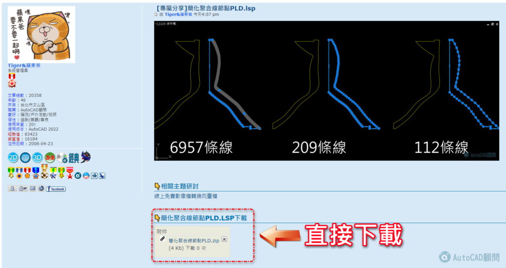
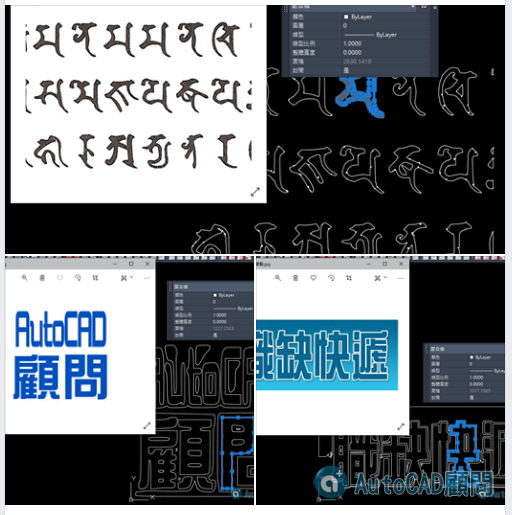

🎞線上課程🎞快速比例設定與出圖技巧_快速上手
👉 https://autocad-tw.1shop.tw/pgodd8 👈
20221002補充影片教學：
👇程式說明：
要拉直的非共線頂點之間的最大距離 <100>：
拉直方向的最大變化<15>：
保留或拉直弧段 [R/S]：
選擇 LWPolylines 簡化節點，或按 Enter 鍵全選：
LSP程式取得方式:一般會員請完成任務(魚幫水水幫魚)👇
訂閱蘋果爸愛分享YT+小鈴鐺
在Youtube影片按下喜歡+留言
👇請在本篇主題回覆文章+截圖給我們 再私訊短信給您下載網址
專屬B會員請直接前往專屬資源版區下載 (新增中文化版程式)👇
https://www.autocad-tw.com/t26591-topic

之前論壇有這篇精華文章，教學影像檔如何轉回向量給AutoCAD使用。
發帖精華只有影像檔是否可變成CAD的線條?
https://www.autocad-tw.com/t1579-topic

現在有個線上免費轉換的網站，真是太方便了，PNG檔轉換回DXF檔成功率很高!轉出來在簡單加工就可以使用囉～
你的圖片檔案色彩越簡單就越有機會成功，目前不知道有沒有轉換次數限制...趕快來試試！
線上免費轉換網站
線上免費轉換▼▼▼
https://convertio.co/zh/jpg-dxf/
網站1說明：
1.檔案大小上限：每個檔案大小上限為100 MB。
2.最近24小時的最大轉換次數：每24小時10個文件。
3.同時啟動的轉化次數上限：2個。
請記得有好康也要一起分享～
請幫忙分享論壇給需要的人，讓我們幫助更多人～
魚幫水水幫魚！
蘋果爸^_^